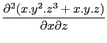
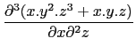
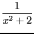

- Soit à calculer :

On tape :
diff(x*y ^2*z^3+x*y*z,x,z)
On obtient :
y^2*3*z^2+y
- Soit à calculer :

On tape :
diff(x*y ^2*z^3+x*y*z,x,z,z)
Ou on tape :
diff(x*y ^2*z^3+x*y*z,x,z$2)
On obtient :
y^2*3*2*z
- Soit à calculer la dérivée troisième de :

On tape :
normal(diff((1)/(x^2+2),x,x,x))
Ou on tape :
normal(diff((1)/(x^2+2),x$3))
On obtient :
(-24*x^3+48*x)/(x^8+8*x^6+24*x^4+32*x^2+16)